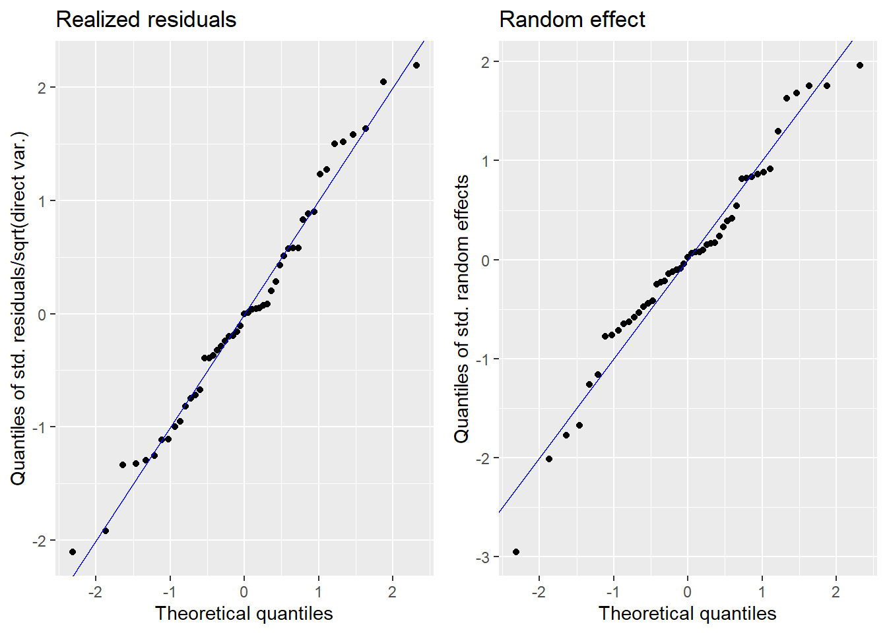
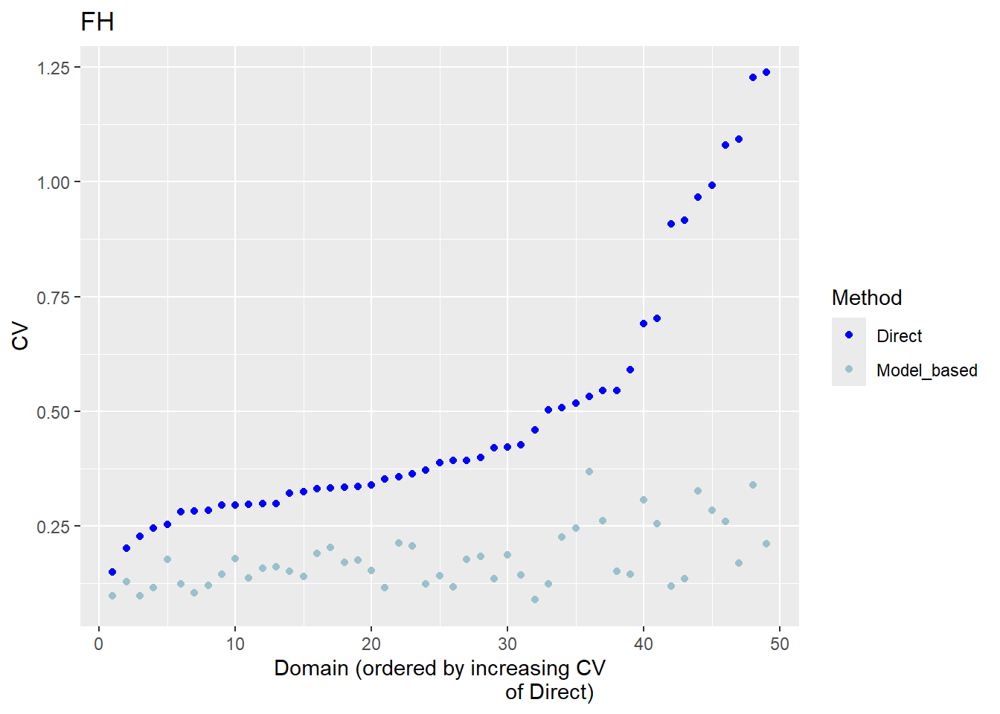

if (sum(installed.packages()[,1] %in% "pacman") != 1){
install.packages("pacman")
}
pacman::p_load(sae, survey, spdep, emdi, data.table, MASS, caret, dplyr, sf)3 The Univariate Fay-Herriot model
3.1 Introduction
In this section, we will present a whole estimation procedure of the standard area-level model introduced by Fay and Herriot (1979) in R. As with the disclaimer in the preceding section, this practical manual is not intended to serve as a theoretical introduction to area-level models. Instead, it offers a set of straightforward and practical R scripts, accompanied by clear explanations, to demonstrate how these tasks can be carried out in R. For a theoretical foundation please refer to Fay and Herriot (1979) and Rao and Molina (2015). In addition to theoretical information, the vignette “A framework for producing small area estimates based on area-level models in R” of the R package emdi (Harmening et al. 2023) provides further code examples for the FH model.
In this chapter, we will describe how to run the univariate Fay-Herriot (FH) using simulated income data from Spain. The estimation procedure is explained step by step.
Step 1: Data preparation. Compute the direct estimates and their corresponding variances on the area-level and eventually perform variance smoothing. Aggregate the available auxiliary variables to the same area level and combine both input data.
Step 2: Model selection. Select the aggregated auxiliary variables at the area level for the FH model using a stepwise selection based on information criteria like the Akaike, Bayesian or Kullback information criteria.
Step 3: Model estimation of FH point estimates and their mean squared error (MSE) estimates as uncertainty measure. Eventually apply a transformation.
Step 4: Assessment of the estimated model. Check the FH model assumptions, including linearity, normality of predicted area effects and standardized model residuals. When violations of the model assumptions are detected, the application of a transformation might help. Repeat Step 3 including a transformation and check again the model assumptions.
Step 5: Comparison of the FH results with the direct estimates.
Step 6: Benchmark the FH point estimates for consistency with higher results.
Step 7: Preparation of the results. Create tables and maps of results.
Step 8: Saving the results. One option is to export the results to known formats like Excel or OpenDocument Spreadsheets.
We will show below the use of the fh() function of the R package emdi (Harmening et al. 2023) which computes the EBLUPs and their MSE estimates of the standard FH model and several extensions of it, among others it allows for the application of transformations. Because the poverty rate is a ratio, it might be helpful to apply the arcsin transformation to guarantee that the results lie between 0 and 1. The function call is:
fh(fixed, vardir, combined_data, domains = NULL, method = "reml", interval = NULL, k = 1.345, mult_constant = 1, transformation = "no", backtransformation = NULL, eff_smpsize = NULL, correlation = "no", corMatrix = NULL, Ci = NULL, tol = 1e-04, maxit = 100, MSE = FALSE, mse_type = "analytical", B = c(50, 0), seed = 123)
3.2 Data and preparation
3.2.1 Load required libraries
First of all, load the required R libraries. The code automatically installs the packages that are not yet installed and loads them. If you need further packages, please add them to the list of p_load which contains the packages required to the run the codes.
3.2.2 Load the dataset
Usually, SAE combines multiple data sources: a survey data set and a census or administrative/register dataset. For the estimation of area-level models, we need area-level aggregates of the same area-level (e.g. NUTS3) of both datasets. The target variable (typically household welfare/income for poverty mapping) is available in the survey but not in the census data.
In this example, we use a synthetic data set adapted from R package sae called incomedata. The original data contains information for \(n = 17,119\) fictitious individuals residing across \(D = 52\) Spanish provinces. The variables include the name of the province of residence (provlab), province code (prov), as well as several correlates of income.
For this tutorial, we use a random 10% sample of the incomedata to estimate the poverty rates. For the univariate case, we use the income variable from 2012.
income_dt <- readRDS("data/incomedata_sample.RDS")
glimpse(income_dt)Rows: 1,716
Columns: 31
Groups: provlab [52]
$ provlab <fct> Alava, Alava, Alava, Alava, Alava, Alava, Alava, Alava, Al…
$ prov <int> 1, 1, 1, 1, 1, 1, 1, 1, 1, 1, 2, 2, 2, 2, 2, 2, 2, 2, 2, 2…
$ ac <int> 16, 16, 16, 16, 16, 16, 16, 16, 16, 16, 8, 8, 8, 8, 8, 8, …
$ gen <int> 2, 1, 2, 1, 2, 2, 1, 2, 1, 1, 1, 2, 1, 2, 1, 1, 1, 1, 1, 2…
$ age <int> 4, 4, 5, 3, 3, 2, 5, 4, 4, 0, 0, 3, 3, 1, 2, 0, 3, 3, 0, 2…
$ nat <int> 1, 1, 1, 1, 1, 1, 1, 1, 1, 2, 1, 1, 1, 1, 1, 1, 1, 1, 1, 1…
$ educ <int> 3, 3, 1, 3, 3, 0, 1, 3, 0, 0, 0, 2, 1, 0, 0, 0, 0, 0, 0, 0…
$ labor <int> 1, 1, 3, 1, 3, 0, 3, 1, 0, 0, 0, 1, 1, 0, 0, 0, 0, 0, 0, 0…
$ age2 <int> 0, 0, 0, 0, 0, 1, 0, 0, 0, 0, 0, 0, 0, 0, 1, 0, 0, 0, 0, 1…
$ age3 <int> 0, 0, 0, 1, 1, 0, 0, 0, 0, 0, 0, 1, 1, 0, 0, 0, 1, 1, 0, 0…
$ age4 <int> 1, 1, 0, 0, 0, 0, 0, 1, 1, 0, 0, 0, 0, 0, 0, 0, 0, 0, 0, 0…
$ age5 <int> 0, 0, 1, 0, 0, 0, 1, 0, 0, 0, 0, 0, 0, 0, 0, 0, 0, 0, 0, 0…
$ educ1 <int> 0, 0, 1, 0, 0, 0, 1, 0, 0, 0, 0, 0, 1, 0, 0, 0, 0, 0, 0, 0…
$ educ2 <int> 0, 0, 0, 0, 0, 0, 0, 0, 0, 0, 0, 1, 0, 0, 0, 0, 0, 0, 0, 0…
$ educ3 <int> 1, 1, 0, 1, 1, 0, 0, 1, 0, 0, 0, 0, 0, 0, 0, 0, 0, 0, 0, 0…
$ nat1 <dbl> 1, 1, 1, 1, 1, 1, 1, 1, 1, 0, 1, 1, 1, 1, 1, 1, 1, 1, 1, 1…
$ labor1 <int> 1, 1, 0, 1, 0, 0, 0, 1, 0, 0, 0, 1, 1, 0, 0, 0, 0, 0, 0, 0…
$ labor2 <int> 0, 0, 0, 0, 0, 0, 0, 0, 0, 0, 0, 0, 0, 0, 0, 0, 0, 0, 0, 0…
$ labor3 <int> 0, 0, 1, 0, 1, 0, 1, 0, 0, 0, 0, 0, 0, 0, 0, 0, 0, 0, 0, 0…
$ income2012 <dbl> 26125.271, 27404.099, 13117.838, 27920.737, 8705.592, 6340…
$ weight <dbl> 7424.759, 23577.245, 41976.969, 19471.566, 12738.217, 2463…
$ income2013 <dbl> 27500.673, 28174.985, 13581.315, 28508.978, 9182.841, 6272…
$ income2014 <dbl> 34739.7326, 32137.8461, 15980.5806, 31512.1529, 11699.9025…
$ povline2012 <dbl> 6477.484, 6477.484, 6477.484, 6477.484, 6477.484, 6477.484…
$ povline2013 <dbl> 6515.865, 6515.865, 6515.865, 6515.865, 6515.865, 6515.865…
$ povline2014 <dbl> 6515.865, 6515.865, 6515.865, 6515.865, 6515.865, 6515.865…
$ abs <dbl> 0.8493392, 0.8493392, 0.8493392, 0.8493392, 0.8493392, 0.8…
$ ntl <dbl> 0.2091905, 0.2091905, 0.2091905, 0.2091905, 0.2091905, 0.2…
$ aec <dbl> 1.1651876, 1.1651876, 1.1651876, 1.1651876, 1.1651876, 1.1…
$ schyrs <dbl> 1.7099321, 1.7099321, 1.7099321, 1.7099321, 1.7099321, 1.7…
$ mkt <dbl> 2.578254, 2.578254, 2.578254, 2.578254, 2.578254, 2.578254…3.2.3 Direct estimation
We will use the direct Horvitz-Thompons estimators that use the survey weights in weight variable. We calculate the sample sizes for each provinces and compute the direct estimates and their variances. We use the direct function of the emdi package here. Other options are e.g. the direct function of package sae (Molina and Marhuenda 2015) or the svyby command of package survey (Lumley 2024). Then, we create a dataframe containing the direct estimate, the standard errors, the variances, the coefficient of variation and the design effects, that are needed for the arcsin transformation. The design effect is the ratio of the variance considering the sampling design to the variance estimated under simple random sampling. For detailled information about the arcsin transformation please refer to Casas-Cordero, Encina, and Lahiri (2016) and Schmid et al. (2017). In some areas with a very small sample size, it may occur, that the individual data only consists of zeros and ones, resulting in a direct estimate of zero or one and a direct variance of zero. We set those areas to out-of-sample and for the final estimation results only the synthetic part of the FH model is used.
## calculate sample size for each province
sampsize_dt <-
income_dt |>
group_by(provlab) |>
summarize(N = n())
## computation of direct estimates and their variances
direct_dt <- emdi::direct(y = "income2012",
smp_data = income_dt |> as.data.table(),
smp_domains = "provlab",
weights = "weight",
threshold = unique(income_dt$povline2012),
var = TRUE)
## create dataframe
direct_dt <-
direct_dt$ind |>
dplyr::select(Domain, Head_Count) |>
rename(Direct = "Head_Count") |>
merge(direct_dt$MSE |>
dplyr::select(Domain, Head_Count) |>
rename(vardir = "Head_Count"),
by = "Domain") |>
mutate(SD = sqrt(vardir)) |>
mutate(CV = SD / Direct) |>
merge(sampsize_dt |>
mutate(provlab = as.factor(provlab)),
by.x = "Domain",
by.y = "provlab") |>
mutate(var_SRS = Direct * (1 - Direct) / N) |>
mutate(deff = vardir / var_SRS) |>
mutate(n_eff = N/deff)
## set zero variance to OOS
direct_dt <- direct_dt[complete.cases(direct_dt), ]
## have a look at sample sizes
summary(direct_dt$N) Min. 1st Qu. Median Mean 3rd Qu. Max.
6.00 14.00 25.00 34.61 49.00 142.00 3.2.4 Variance smoothing
A quick inspection of the preceding results will show some provinces contain low sample sizes which sometimes result in extreme value poverty rates and hence 0 variance. To avoid this, we will show you how to apply the variance smoothing method suggested by You and Hidiroglou (2023). Please see the code and Roxygen comments below explaining the use of the varsmoothie_king() function which computes smoothed variances. In case, the arcsin transformation will be applied, the variance smoothing described here is not necessary, since the arcsin transformation works variance stabilizing itself. When applying the arcsin transformation, the direct variances are automatically set to 1/(4*effective sampling size) when using the fh function of package emdi. The effective sample size equals the sample size of each area divided by the design effect. If the variance stabilizing effect is not enough, the design effect of a higher area level could also be used here (in this example the regions ac).
#' A function to perform variance smoothing
#'
#' The variance smoothing function applies the methodology of You and Hiridoglou (2023)
#' which uses simply log linear regression to estimate direct variances for sample
#' poverty rates which is useful for replacing poverty rates in areas with low sampling.
#'
#' @param domain a vector of unique domain/target areas
#' @param direct_var the raw variances estimated from sample data
#' @param sampsize the sample size for each domain
#'
#' @export
varsmoothie_king <- function(domain,
direct_var,
sampsize){
dt <- data.table(Domain = domain,
var = direct_var,
n = sampsize)
dt$log_n <- log(dt$n)
dt$log_var <- log(dt$var)
lm_model <- lm(formula = log_var ~ log_n,
data = dt[!(abs(dt$log_var) == Inf),])
dt$pred_var <- predict(lm_model, newdata = dt)
residual_var <- summary(lm_model)$sigma^2
dt$var_smooth <- exp(dt$pred_var) * exp(residual_var/2)
return(dt[, c("Domain", "var_smooth"), with = F])
}Ok, the goal now is to use the above varsmoothie_king() function to add an additional column of smoothed variances into our direct_dt dataframe.
var_smooth <- varsmoothie_king(domain = direct_dt$Domain,
direct_var = direct_dt$vardir,
sampsize = direct_dt$N)
direct_dt <- var_smooth |> merge(direct_dt, by = "Domain")3.2.5 Auxiliary variable preparation
The FH model is a model of poverty rates at the target area level, hence the data format required for this exercise has the province as its unit of observation. This format has a few essential columns:
Variable for poverty rates
The set of candidate variables from which the most predicted of poverty rates will be selected
The target area variable identifier (i.e. in this case the province variable
provandprovlab)
We prepare this dataset as follows:
## create the candidate variables
candidate_vars <- colnames(income_dt)[!colnames(income_dt) %in%
c("provlab", "prov",
"income2012", "income2013", "income2014",
"povline2012", "povline2013", "povline2014",
"ac", "nat", "educ", "labor",
"age")]
## change dummy of gen to 0 and 1
income_dt <-
income_dt |>
mutate(across(c(gen), ~ case_when(
.x == 1 ~ 0,
.x == 2 ~ 1,
TRUE ~ NA_real_
)))
## aggregating the unit-level data to the province level
prov_dt <-
income_dt |>
group_by(provlab) |>
summarize(
across(
any_of(candidate_vars),
~ weighted.mean(x = ., w = weight, na.rm = TRUE),
.names = "{.col}"
)
)
### combine the the dataframe containing the direct estimates and their variances with the province level data
comb_Data <- merge(direct_dt, prov_dt,
by.x = "Domain", by.y = "provlab",
all = TRUE)3.3 Model selection
3.3.1 Model preparation
FH does not run if there is any missing value in the auxiliary variables, and therefore, any variable with missing value should be removed in advance.
rowsNAcovariates <- rowSums(sapply(comb_Data[,..candidate_vars], is.na))
comb_Data <- comb_Data[rowsNAcovariates == 0, ]3.3.2 Check multicollinearity
With the help of the step() function of package emdi, we perform a variable selection based on the chosen variable selection criterion and directly get the model with fewer variables. The function step_wrapper() implemented below is a wrapper to the emdi::step() function and performs all the perfunctory cleaning necessary to use step(). This includes dropping columns that are entirely missing (NA) and keep only complete cases/observations (for the model selection only the in-sample domains are used) and remove perfectly or near collinear variables and combinations.
#' A function to perform stepwise variable selection based on selection criteria
#'
#' @param dt data.frame, dataset containing the set of outcome and independent variables
#' @param xvars character vector, the set of x variables
#' @param y character, the name of the y variable
#' @param cor_thresh double, a correlation threshold between 0 and 1
#' @param criteria character, criteria that can be chosen are "AIC", "AICc", "AICb1", "AICb2", "BIC", "KIC", "KICc", "KICb1", or "KICb2". Defaults to "AIC". If transformation is set to "arcsin", only "AIC" and "BIC" can be chosen.
#' @param vardir character, name of the variable containing the domain-specific sampling variances of the direct estimates that are included in dt
#' @param transformation character, either "no" (default) or "arcsin".
#' @param eff_smpsize character, name of the variable containing the effective sample sizes that are included in dt. Required argument when the arcsin transformation is chosen. Defaults to NULL.
#'
#' @import data.table
#' @import caret
#' @importFrom emdi step fh
step_wrapper <- function(dt, xvars, y, cor_thresh = 0.95, criteria = "AIC",
vardir, transformation = "no", eff_smpsize) {
dt <- as.data.table(dt)
# Drop columns that are entirely NA
dt <- dt[, which(unlist(lapply(dt, function(x) !all(is.na(x))))), with = FALSE]
xvars <- xvars[xvars %in% colnames(dt)]
# Keep only complete cases
dt <- dt[complete.cases(dt),]
# Step 1: Remove aliased (perfectly collinear) variables
model_formula <- as.formula(paste(y, "~", paste(xvars, collapse = " + ")))
lm_model <- lm(model_formula, data = dt)
aliased <- is.na(coef(lm_model))
if (any(aliased)) {
xvars <- names(aliased)[!aliased & names(aliased) != "(Intercept)"]
}
# Step 2: Remove near-linear combinations
xmat <- as.matrix(dt[, ..xvars])
combo_check <- tryCatch(findLinearCombos(xmat), error = function(e) NULL)
if (!is.null(combo_check) && length(combo_check$remove) > 0) {
xvars <- xvars[-combo_check$remove]
xmat <- as.matrix(dt[, ..xvars])
}
# Step 3: Drop highly correlated variables
cor_mat <- abs(cor(xmat))
diag(cor_mat) <- 0
while (any(cor_mat > cor_thresh, na.rm = TRUE)) {
cor_pairs <- which(cor_mat == max(cor_mat, na.rm = TRUE), arr.ind = TRUE)[1, ]
var1 <- colnames(cor_mat)[cor_pairs[1]]
var2 <- colnames(cor_mat)[cor_pairs[2]]
# Drop the variable with higher mean correlation
drop_var <- if (mean(cor_mat[var1, ]) > mean(cor_mat[var2, ])) var1 else var2
xvars <- setdiff(xvars, drop_var)
xmat <- as.matrix(dt[, ..xvars])
cor_mat <- abs(cor(xmat))
diag(cor_mat) <- 0
}
# Step 4: Warn if still ill-conditioned
cond_number <- kappa(xmat, exact = TRUE)
if (cond_number > 1e10) {
warning("Design matrix is ill-conditioned (condition number > 1e10). Consider reviewing variable selection.")
}
# Final model fit
model_formula <- as.formula(paste(y, "~", paste(xvars, collapse = " + ")))
# Stepwise selection
fh_args <- list(
fixed = model_formula,
vardir = vardir,
combined_data = dt,
method = "ml",
MSE = FALSE
)
if (transformation == "arcsin") {
fh_args$transformation <- "arcsin"
fh_args$backtransformation <- "bc"
fh_args$eff_smpsize <- eff_smpsize
} else {
fh_args$transformation <- "no"
fh_args$B <- c(0, 50)
}
fh_model <- do.call(emdi::fh, fh_args)
stepwise_model <- emdi::step(fh_model, criteria = criteria)
return(stepwise_model)
}We apply the function to select the variables.
fh_step <- step_wrapper(dt = comb_Data,
xvars = candidate_vars,
y = "Direct",
cor_thresh = 0.8,
criteria = "AIC",
vardir = "vardir",
transformation = "arcsin",
eff_smpsize = "n_eff") df AIC
- gen 1 -63.164
- mkt 1 -63.163
- labor1 1 -63.059
- nat1 1 -62.934
- labor2 1 -62.613
- weight 1 -62.543
- aec 1 -61.789
- educ2 1 -61.408
- abs 1 -61.311
<none> -61.165
- educ3 1 -59.668
- age2 1 -59.182
- ntl 1 -58.846
- educ1 1 -58.643
- age4 1 -58.363
- age3 1 -58.149
- age5 1 -57.609
- schyrs 1 -49.426 df AIC
- mkt 1 -65.162
- labor1 1 -65.016
- nat1 1 -64.893
- labor2 1 -64.599
- weight 1 -64.389
- aec 1 -63.782
- abs 1 -63.293
- educ2 1 -63.211
<none> -63.164
- educ3 1 -61.628
- age2 1 -61.174
- ntl 1 -60.377
- age4 1 -60.327
- educ1 1 -60.282
- age3 1 -60.114
- age5 1 -59.585
- schyrs 1 -49.299 df AIC
- labor1 1 -66.996
- nat1 1 -66.892
- labor2 1 -66.572
- weight 1 -66.299
- aec 1 -65.757
- abs 1 -65.265
- educ2 1 -65.205
<none> -65.162
- educ3 1 -63.586
- age2 1 -63.156
- ntl 1 -62.339
- age4 1 -62.282
- educ1 1 -62.281
- age3 1 -62.103
- age5 1 -61.529
- schyrs 1 -44.722 df AIC
- nat1 1 -68.744
- weight 1 -68.194
- labor2 1 -68.091
- aec 1 -67.444
- educ2 1 -67.204
- abs 1 -67.056
<none> -66.996
- educ3 1 -65.559
- ntl 1 -64.281
- educ1 1 -64.280
- age2 1 -64.146
- age5 1 -63.528
- age4 1 -63.153
- age3 1 -62.968
- schyrs 1 -44.445 df AIC
- labor2 1 -69.873
- weight 1 -69.862
- aec 1 -69.064
- educ2 1 -68.990
- abs 1 -68.835
<none> -68.744
- educ3 1 -67.146
- educ1 1 -66.088
- age2 1 -66.018
- ntl 1 -65.874
- age5 1 -65.351
- age4 1 -65.001
- age3 1 -64.922
- schyrs 1 -45.918 df AIC
- weight 1 -70.966
- aec 1 -70.254
- educ2 1 -70.002
<none> -69.873
- abs 1 -69.619
- educ3 1 -68.510
- age2 1 -67.269
- ntl 1 -67.101
- educ1 1 -66.763
- age5 1 -66.706
- age3 1 -65.948
- age4 1 -65.936
- schyrs 1 -45.910 df AIC
- aec 1 -71.617
- educ2 1 -71.408
<none> -70.966
- abs 1 -70.484
- educ3 1 -69.733
- age2 1 -68.714
- ntl 1 -68.470
- educ1 1 -68.334
- age5 1 -67.634
- age3 1 -67.530
- age4 1 -67.073
- schyrs 1 -46.344 df AIC
- educ2 1 -72.299
<none> -71.617
- abs 1 -71.486
- educ3 1 -70.772
- age2 1 -69.871
- educ1 1 -69.716
- ntl 1 -68.932
- age5 1 -68.705
- age4 1 -68.546
- age3 1 -68.297
- schyrs 1 -46.078 df AIC
- educ3 1 -72.474
<none> -72.299
- abs 1 -72.265
- age2 1 -71.479
- age5 1 -69.915
- educ1 1 -69.674
- ntl 1 -69.367
- age4 1 -69.075
- age3 1 -67.544
- schyrs 1 -45.239 df AIC
- abs 1 -73.093
<none> -72.474
- age2 1 -71.628
- age5 1 -71.235
- educ1 1 -71.185
- age4 1 -70.720
- ntl 1 -70.406
- age3 1 -69.189
- schyrs 1 -45.949 df AIC
<none> -73.093
- age5 1 -72.249
- educ1 1 -72.137
- age2 1 -71.922
- ntl 1 -71.327
- age4 1 -71.134
- age3 1 -70.271
- schyrs 1 -47.230print(fh_step$fixed)Direct ~ age2 + age3 + age4 + age5 + educ1 + ntl + schyrs
<environment: 0x000002e70931b6c8>3.4 Model estimation of FH point and their MSE estimates.
In this example, we use the function fh to calculate the FH estimates. Because we want to estimate a ratio, we need to apply the arcsin transformation to guarantee that the results lie between 0 and 1. For that, we choose “arcsin” as transformation, and a bias-corrected backtransformation (“bc”). Additionally, the effective sample size, which equals the sample size of each area divided by the design effect, is needed for the arcsin transformation. We set the MSE estimation to TRUE, the mse_type to “boot” (necessary for the type of transformation) and determine the number of bootstrap iterations. For practical applications, values larger than 200 are recommended. In case, no transformation is desired, the transformation argument must be set to “no” and the inputs backtransformation and eff_smpsize are no longer needed.
fh_model <- fh(fixed = formula(fh_step$fixed),
vardir = "vardir",
combined_data = comb_Data,
domains = "Domain",
method = "ml",
transformation = "arcsin",
backtransformation = "bc",
eff_smpsize = "n_eff",
MSE = TRUE,
mse_type = "boot", B = c(50, 0))
## In case, no transformation is desired, the call would like this:
# fh_model <- fh(
# fixed = Direct ~ age2 + age3 + age4 + age5 + educ1 + ntl + schyrs, #formula(fh_step$fixed),
# vardir = "vardir", combined_data = comb_Data, domains = "Domain",
# method = "ml", MSE = TRUE) 3.5 Assessment of the estimated model.
With the help of the summary method of emdi, we gain detailed insights into the data and model components. It includes information on the estimation methods used, the number of domains, the log-likelihood, and information criteria as proposed by Marhuenda, Morales, and Camen Pardo (2014). It also reports the adjusted \(R^2\) from a standard linear model and the adjusted \(R^2\) specific to FH models, as introduced by Lahiri and Suntornchost (2015). It also offers diagnostic measures to assess model assumptions regarding the standardized realized residuals and random effects. These include skewness and kurtosis (based on the moments package by Komsta and Novomestky (2015)), as well as Shapiro-Wilk test statistics and corresponding p-values to evaluate the normality of both error components.
summary(fh_model)Call:
fh(fixed = formula(fh_step$fixed), vardir = "vardir", combined_data = comb_Data,
domains = "Domain", method = "ml", transformation = "arcsin",
backtransformation = "bc", eff_smpsize = "n_eff", MSE = TRUE,
mse_type = "boot", B = c(50, 0))
Out-of-sample domains: 3
In-sample domains: 49
Variance and MSE estimation:
Variance estimation method: ml
Estimated variance component(s): 7.643268e-05
MSE method: bootstrap
Coefficients:
coefficients std.error t.value p.value
(Intercept) 0.803839 0.161793 4.9683 6.753e-07 ***
age2 -0.596737 0.335123 -1.7807 0.07497 .
age3 -0.492147 0.224118 -2.1959 0.02810 *
age4 -0.501614 0.252090 -1.9898 0.04661 *
age5 -0.436006 0.258521 -1.6865 0.09169 .
educ1 0.251093 0.146038 1.7194 0.08555 .
ntl -0.032500 0.016747 -1.9406 0.05230 .
schyrs 0.093883 0.016794 5.5904 2.265e-08 ***
---
Signif. codes: 0 '***' 0.001 '**' 0.01 '*' 0.05 '.' 0.1 ' ' 1
Explanatory measures:
loglike AIC BIC AdjR2 FH_R2
1 45.54653 -73.09307 -56.06668 0.4342252 0.7365157
Residual diagnostics:
Skewness Kurtosis Shapiro_W Shapiro_p
Standardized_Residuals 0.1976387 2.604752 0.9829282 0.6919975
Random_effects -0.3420849 3.629614 0.9694044 0.2292763
Transformation:
Transformation Back_transformation
arcsin bcWe can see, that 49 domains are in-sample domains. The 3 out-of-sample domains belong to the domains with 0 direct and variance estimates that we set to NA in the beginning. The variance of the random effects equals 7.643268e-05. All of the included auxiliary variables are significant on a 0.05 significance level and their explanatory power is large with an adjusted \(R^2\) (for FH models) of around 0.74. The results of the Shapiro-Wilk-test indicate that normality is not rejected for both errors.
3.5.1 Diagnostic plots
We produce normal quantile-quantile (Q-Q) plots of the standardized realized residuals and random effects and plots of the kernel densities of the distribution of both error terms by the plot method of emdi.
plot(fh_model)
Press [enter] to continuePress [enter] to continueThe plots show slight deviations of the distributions from normality, but together with the results of the Shapiro-Wilk-test, we do not reject the normality assumption.
3.6 Comparison of the FH results with the direct estimates.
The FH estimates are expected to align closely with the direct estimates in domains with small direct MSEs and/or large sample sizes. Moreover, incorporating auxiliary information should enhance the precision of the direct estimates. We produce a scatter plot proposed by Brown et al. (2001) and a line plot. The fitted regression and the identity line of the scatter plot should not differ too much. The FH estimates should track the direct estimates within the line plot especially for domains with a large sample size/small MSE of the direct estimator. Furthermore, we compare the MSE and CV estimates for the direct and FH estimators using boxplots and ordered scatter plots (by setting the input arguments MSE and CV to TRUE).
Additionally, we compute a correlation coefficient of the direct estimates and the estimates of the regression-synthetic part of the FH model (Chandra, Salvati, and Chambers 2015) and a goodness of fit diagnostic (Brown et al. 2001).
compare_plot(fh_model, MSE = TRUE, CV = TRUE)Press [enter] to continuePress [enter] to continuePress [enter] to continuePress [enter] to continuePress [enter] to continue
compare(fh_model)Brown test
Null hypothesis: EBLUP estimates do not differ significantly from the
direct estimates
W.value Df p.value
31.14936 49 0.9780679
Correlation between synthetic part and direct estimator: 0.68 The direct estimates are tracked by most of the FH estimates within the line plot. The precision of the direct estimates could be improved by the usage of the FH model in terms of MSEs and CVs. The null hypothesis of the Brown test is not rejected and the correlation coefficient indicates a positive correlation (0.68) between the direct and FH estimates.
If the result of the model assessment is not satisfactory, the following should be checked again: Can the direct estimation including variance estimation be improved? Are there further auxiliary variables and/or must possible interaction effects be taken into account? Does a (different) transformation need to be used?
3.7 Benchmark the FH point estimates for consistency with higher results.
Benchmarking is based on the principle that aggregated FH estimates should sum up to the estimates at a higher regional level. For the benchmark function, a benchmark value and a vector containing the shares of the population size per area (\(N_d/N\)) is required. Please note, that only the FH estimates are benchmarked and not their MSE estimates. As benchmark types “raking”, “ratio” and “MSE_adj” can be chosen. For further details about using the function, please refer to the emdi vignette and for general information about the benchmarking options to Datta et al. (2011).
## create the poverty indicator
income_dt <-
income_dt |>
mutate(poor2012 = ifelse(income2012 < povline2012, 1, 0))
## compute the benchmark value (mean of poor2012 for the whole country of Spain)
benchmark_value <- weighted.mean(income_dt$poor2012, income_dt$weight)
## compute the share of population size in the total population size (N_d/N) per area
data("sizeprov")
comb_Data <- comb_Data |>
left_join(sizeprov |>
mutate(ratio_n = Nd/sum(Nd)), by = c("Domain" ="provlab"))
fh_bench <- benchmark(fh_model,
benchmark = benchmark_value,
share = comb_Data$ratio_n,
type = "ratio",
overwrite = TRUE)
head(fh_bench$ind) Domain Direct FH FH_Bench Out
1 Alava 0.30885799 0.2930754 0.3055698 0
2 Albacete 0.05339445 0.1166571 0.1216305 0
3 Alicante 0.19412452 0.1629585 0.1699058 0
4 Almeria 0.42100526 0.1954816 0.2038155 0
5 Avila NA 0.1156717 0.1206030 1
6 Badajoz 0.15381464 0.1664585 0.1735550 03.8 Preparation of the results.
Create one dataframe that contains the direct and FH estimation results including MSE and CV results.
results <-as.data.frame(estimators(fh_model, MSE = TRUE, CV = TRUE))
head(results) Domain Direct Direct_MSE Direct_CV FH FH_MSE FH_CV
1 Alava 0.30885799 0.025486256 0.5168853 0.2930754 0.0051610993 0.2451274
2 Albacete 0.05339445 0.003324107 1.0797952 0.1166571 0.0009149401 0.2592896
3 Alicante 0.19412452 0.003357358 0.2984822 0.1629585 0.0006634858 0.1580661
4 Almeria 0.42100526 0.015853486 0.2990714 0.1954816 0.0009920503 0.1611242
5 Avila NA NA NA 0.1156717 0.0031406044 0.4844842
6 Badajoz 0.15381464 0.004314773 0.4270526 0.1664585 0.0005706955 0.14351473.8.1 Poverty map
With the help of geographical maps, the results can be presented in a user-friendly way and differences among the areas can be detected more easily. For the map, a shape file is reqired. The domain identifiers in the results object (fh_model) need to match to the respective identifiers of the shape file. Therefore, we create a mapping table first and then produce the map by emdi::map_plot.
## load the shapefile dataframe and convert it to an object of type sf which is a necessary input for the map_plot function
spain_dt <- readRDS("data/shapes/spainshape.RDS")
spain_dt <- sf::st_as_sf(spain_dt)
## Create a suitable mapping table
## Find the right order
domain_ord <- match(spain_dt$provlab, fh_model$ind$Domain)
## Create the mapping table based on the order obtained above
map_tab <- data.frame(pop_data_id = fh_model$ind$Domain[domain_ord],
shape_id = spain_dt$provlab)
## Create map
map_plot(object = fh_model, MSE = TRUE, map_obj = spain_dt,
map_dom_id = "provlab", map_tab = map_tab)Press [enter] to continuePress [enter] to continuePress [enter] to continue
3.9 Saving the results.
3.9.1 Save workspace.
save.image("fh_estimation.RData")3.9.2 Export the model output and estimation results.
write.excel(fh_model,
file = "fh_model_output.xlsx",
MSE = TRUE, CV = TRUE
)